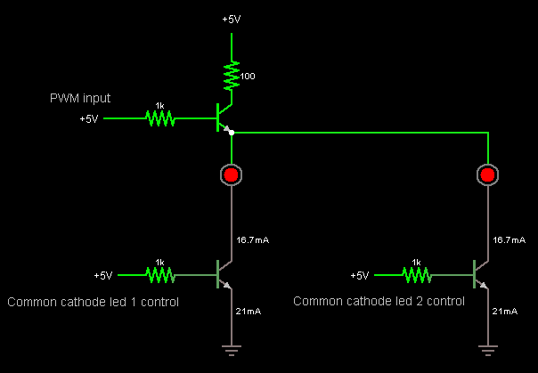

Why, why, why oh why ?
It's a present for a friend who's leaving the office, I've got less than one week to build it all... hard, no room for error (-.-;)
The box will have 3 RGB led (placed East, South and West) and the USB cable at the top (North). We need USB for communication so let's use a Arduino (no time to test V-USB as initially planned). The 3 led will be able to PWM different colors at different pace, on/off, fade... well the ardPulsar box itself will just control the leds, all the decisions will have to be taken by the PC. Idea is in fact to make the ardPulsar a multi-purpose display, piloted via the control library. First purpose is show mail arrival, but since my colleague is also a professional developper, he should be able to add new things
Technical points of attention
3 leds doing different PWM with only 6 PWM port on an Arduino ? Not possible out of the box, so I'll use one of the many solutions : use transistors as logic switch and drive the 3 leds with same input and use persistance of vision.
Other options : redo the PWM manually (but way less fun)
Since I want to do time-multiplexing of the led, I have to have a quite fast PWM (default is around 500 Hz I think).
So one can
force the PWM speed by changing timer settings. Ie, let's have PWM 11 and 3 run at ~4 KHz :
TCCR2B = TCCR2B & 0b11111000 | 0x02;
See these pages for details :
Communication protocol
d: 1 char in {S,E,W}, RRGGBB : color encoded in hex (2 chars per color component, so 6 chars total), DD : duration in 10th of second (hex encoded => max =~ 25s)
- Sd : Stop led d
- CdRRGGBB : Set led d color RGB
- FdRRGGBBDD : Fade led d from current color to RRGGBB over DD (hex encoded, 10th of seconds)
Schema

$ 1 5.0E-6 10.634267539816555 43 2.0 50
172 208 336 176 336 0 6 5.0 5.0 0.5 0.0 0.5 Base Voltage
w 320 352 320 400 1
w 320 320 320 272 1
172 320 80 320 48 0 6 5.0 5.0 0.0 0.0 0.5 Collector Voltage
g 320 400 320 416 0
t 272 336 320 336 0 1 0.6275116430101845 0.6650758619557531 100.0
r 320 80 320 144 0 100.0
r 208 336 272 336 0 1000.0
t 288 160 320 160 0 1 0.6717118026689761 0.6846400829573815 100.0
162 320 176 320 272 1 2.1024259 1.0 0.0 0.0
r 288 160 192 160 0 100.0
172 192 160 160 160 0 6 5.0 5.0 0.5 0.0 0.5 Base Voltage
x 117 143 185 147 0 14 PWM input
x 69 372 262 376 0 14 Common cathode led 1 control
x 390 371 583 375 0 14 Common cathode led 2 control
162 608 176 608 272 1 2.1024259 1.0 0.0 0.0
r 496 336 560 336 0 1000.0
t 560 336 608 336 0 1 0.6275116430101831 0.665075861955753 100.0
g 608 400 608 416 0
w 608 320 608 272 1
w 608 352 608 400 1
172 496 336 464 336 0 6 5.0 5.0 0.5 0.0 0.5 Base Voltage
w 320 176 608 176 0
This is just an extract for the idea (explained for 1 color component, so do this x3):
- The PWM for the color (say Red) is shared for all the led, using a NPN transistor as a switch. Current source is directly the %205 V of the Arduino board, the PWM pin just sources a few mA
- The second transistor at the bottom is a switch that emplables the cathode to or not, hence let the led turn on
So you need 3 transistors for the PWM (R, G, B) %20 1 transistors per RGB common cathode makes 6 transistor total in my case.
The top resistor (100 ohm) might be a bit too strong when 3 led are driven (drops around 10-15 mA) so turning it to 50 ohm gives a nice 20 mA to the leds (just put another 100 ohm in parallel to drop the summed resistance to 50 ohm).